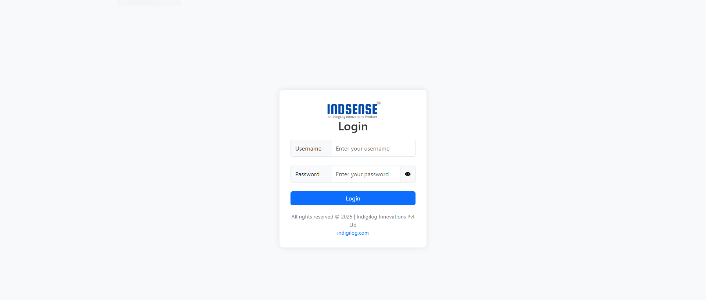
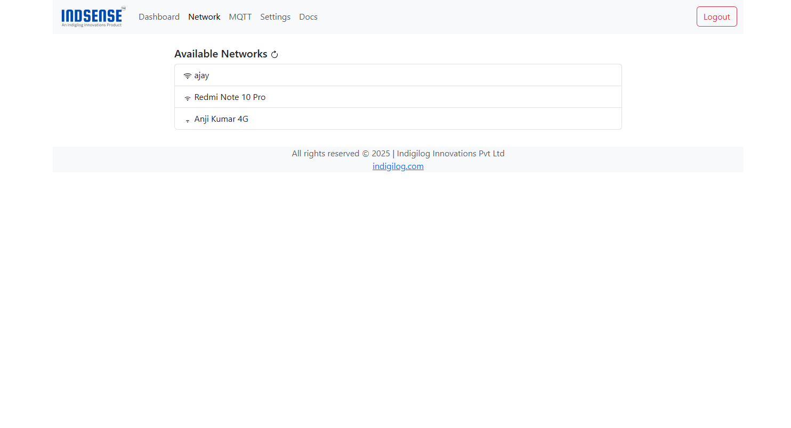
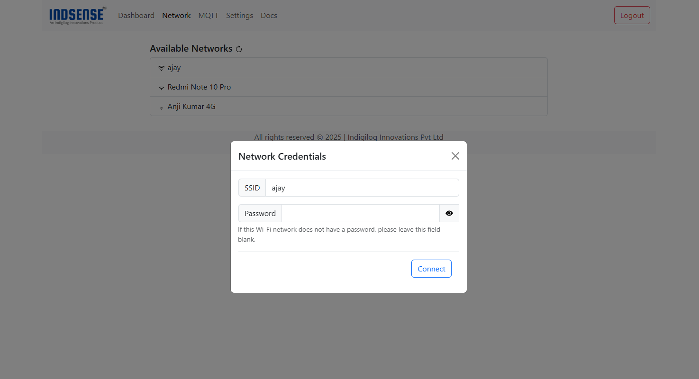

Connecting to Wi-Fi Network
Connect your device to a Wi-Fi network using the built-in configuration portal. Follow the steps below:
📶 Steps to Connect
-
Check Existing Network Connection
- If the device is already connected to a Wi-Fi network:
- LED Status:
Solid Green→ Connected.Blinking Green every 100ms→ Connected.
- LED Status:
- In this case, refer to Change Network Connection to update or modify the connection.
- If the device is already connected to a Wi-Fi network:
-
Connect to Device Hotspot
- On your PC or mobile device, search for the device hotspot SSID (printed on the device label):
- SSID:
ind-xxxxxx - Default Password:
12345678
- SSID:
- On your PC or mobile device, search for the device hotspot SSID (printed on the device label):
-
Access the Captive Portal
- The captive portal should automatically open after connecting to the hotspot.
- If it doesn’t:
Open a browser and manually enter the portal URL printed on the device label:ind-xxxxx.local
-
Login to Portal
- Enter the default login credentials:

- Username:
admin - Password:
admin
⚠️ Important: For security, change the default username and password immediately after logging in.
Refer to: Change Login Password -
Select Wi-Fi Network
- Navigate to the Network tab.
- Available networks will be listed.
If your network isn’t visible, click the Reload button to scan again.

-
Connect to Desired Network
- Click on the desired Wi-Fi network.
- Enter the password when prompted:
- Password-Protected Networks: Enter the password.
- Open Networks: Leave the password field empty.
- Press Connect.

-
Confirm Connection
- Upon successful connection:
- LED Status:
Blinking Green every 100ms
- LED Status:
- Connect your PC to the same Wi-Fi network.
- Upon successful connection:
-
Access Device
- After connecting to the configured network, click OK on the portal.
- The page will refresh and redirect you to the login page where you can access the device.
🔄 Change Network Connection
To change the existing network connection:
- Connect your PC to the network, the device is connected and open the captive portal.
- Login using your credentials.
- Navigate to the Network tab.
- Select a new network and enter credentials.
- Confirm connection and check LED status.
🏭 Reset to Factory Defaults
⚠️ Attention: This action will wipe out all the user saved passwords, network credentials and calibration settings
To perform a factory reset:
- Power off the device.
- Press and hold the Reset Button.
- Power on the device while holding the button for 10 seconds.
- Release the button when the LED starts blinking rapidly.
- The device will reboot and restore default settings.
✅ After reset:
You will need to reconnect to the device hotspot and reconfigure the network and other settings.